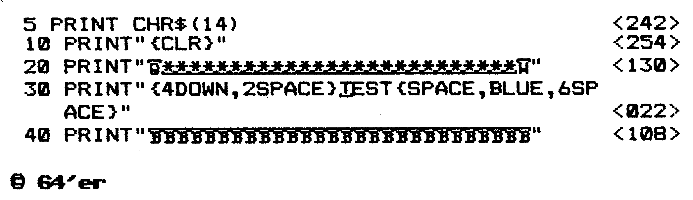
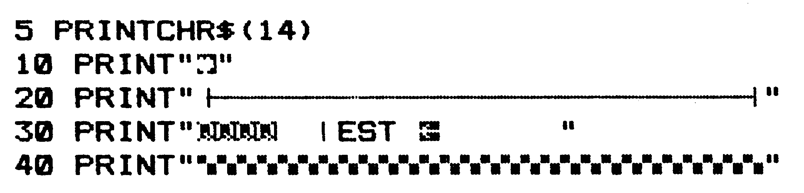

Checksummer 20 V3
Der Checksummer 20 V3 für den VC 20 überprüft jede Basic-Zeile direkt nach der Eingabe, erkennt Fehleingaben und auch Vertauschungen von Zahlen und Ziffern, und erspart Ihnen deshalb eine aufwendige Fehlersuche.
Der Checksummer 20 V3 ist ein kleines Maschinenprogramm, das Sie sofort unterrichtet, ob Sie die jeweilige Programmzeile korrekt eingegeben haben.
So gehen Sie vor:
1. Programm abtippen und speichern.
2. Starten mit RUN.
3. Anschalten des Checksummer 20 V3 mit SYS 981.
4. Test: Geben Sie in einer freien Zeile ein: »1 REM« und drücken die RETURN-Taste. Am Bildschirm oben links sollten Sie die Prüfsumme <63> sehen.
5. Geben Sie ein Listing aus unserem Heft ein. Nach jeder Zeile wird die Zahl, die im Listing in Klammern < > steht, in den Bildschirm eingeblendet. Stimmen die Zahlen nicht überein, so liegt vermutlich ein Eingabefehler vor.
Die Zahl in den Klammern und auch die Klammern selbst dürfen beim Abtippen nicht mit eingegeben werden!
6. Dieser Checksummer 20 V3 bemerkt auch Vertauschungen von Zahlen und Buchstaben.
7. Abschaltung wird mit »SYS 58459« vollzogen.
Achtung: Nehmen Sie keine Kassetten-Operationen vor, wenn der Checksummer VC 20 eingeschaltet ist. Da das Betriebssystem den Kassettenpuffer mit Daten belegt, kann der Checksummer VC 20 überschrieben werden. Wollen Sie deshalb ein Programm auf (von) Kassette speichern (laden), so müssen Sie erst den Checksummer VC 20 abschalten.
Als Sicherung wird bei der Initialisierung geprüft, ob das zuletzt angesprochene Peripherie-Gerät der Kassettenrecorder war. Ist das der Fall, so werden die Betriebssystemroutinen LOAD und SAVE für die Benutzung gesperrt. Der Computer meldet bei Aufruf einer dieser beiden Routinen READY, ohne weitere Aktionen durchzuführen. Diese Sicherung kann man nach der Tipparbeit aufheben, wenn man den Checksummer VC 20 mit SYS 58459 abschaltet. Weiterhin wird dann durch gleichzeitiges Drücken der Tasten »Run-Stop & Restore« erreicht, daß die Betriebssystemroutinen LOAD und SAVE wieder eingerichtet werden.
— Bei Benutzung einer Diskettenstation brauchen Sie nicht darauf zu achten, daß bei LOAD beziehungsweise SAVE der Checksummer VC 20 überschrieben wird, da der Kassettenpuffer für die Diskettenstation normalerweise nicht genutzt wird. Bitte beachten Sie auch die folgende Seite.
(F. Lonczewski/gk)
